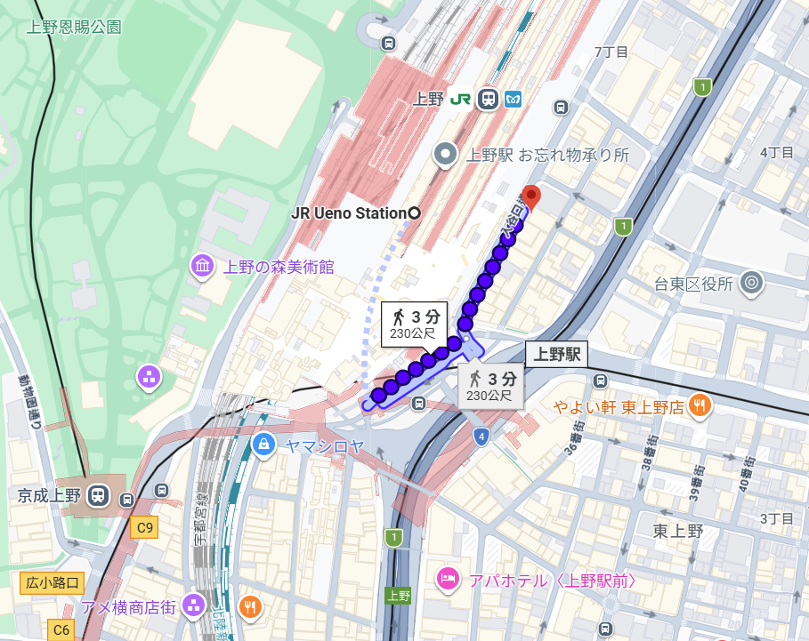

D1 10/29
ホテルリソル上野
Hotel Resol 上野 · 東京・上野 · 1 晚
步行
JR 上野站約 1 分鐘
房間
Twin 約 20 ㎡、全館禁菸
下飛機後的第一晚。離阿美橫町、藥妝店都很近，適合先把日用品買齊。
3 家、都不含早餐
三家都在車站步行約 10 分鐘內。盛岡連住三晚，D4、D5 大行李留房，D6 才退房帶走。

D1 10/29
Hotel Resol 上野 · 東京・上野 · 1 晚
步行
JR 上野站約 1 分鐘
房間
Twin 約 20 ㎡、全館禁菸
下飛機後的第一晚。離阿美橫町、藥妝店都很近，適合先把日用品買齊。

D2 10/30
Daiwa Roynet Hotel 仙台 · 仙台 · 1 晚
步行
JR 仙台站東口約 2 分鐘
房間
Standard Twin 約 20.8–21.5 ㎡
抵達仙台先把大行李寄在這裡，再去松島。隔天退房後轉往山寺、盛岡。

D3～D5 10/31–11/2
Daiwa Roynet Hotel 盛岡駅前 · 盛岡 · 3 晚
步行
JR 盛岡站東口步行約 4 分鐘
房間
連住三晚；D4、D5 大行李留飯店
這趟最長的住宿。猊鼻溪與奧入瀨都當天來回，D6 才退房帶行李回台灣。
三家方案都不含早餐。上野、仙台、盛岡站附近的咖啡店寫在美食 → 早餐咖啡店。